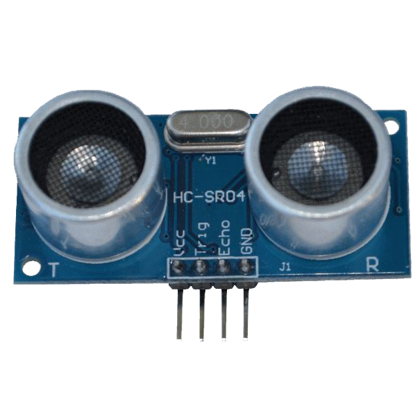
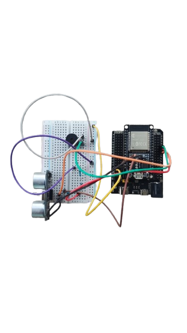

Early Warning System
Mendeteksi ketinggian level air secara real-time menggunakan sensor ultrasonik berbasis NodeMCU ESP32. Data dikirimkan langsung ke IoT Platform ThingSpeak dan memberikan peringatan darurat instan via Telegram Bot serta buzzer lokal.
Simulasi Alat Realistis (Interaktif & Bersuara Grafik)
Aktifkan tombol suara buzzer terlebih dahulu, kemudian geser slider simulasi jarak sensor untuk mendengarkan perubahan pola grafik gelombang suara secara nyata.
• > 30 cm = AMAN (Garis Datar Rata)
• > 25 cm = SIAGA (Denyut Tunggal Jeda Lambat)
• > 10 cm = BAHAYA (Gelombang Kontinu Rapat)
• <= 10 cm = KRITIS (Getaran Super Rapat & Cepat!)
Dokumentasi Foto Komponen Fisik
Klik pada gambar komponen di bawah ini untuk memperbesar tampilan foto secara detail:

NodeMCU ESP32
Microcontroller utama yang memproses sensor dan mengendalikan koneksi data cloud IoT.

Sensor HC-SR04
Mengukur jarak permukaan air berdasarkan waktu pantulan gelombang ultrasonik.

Active Buzzer 5V
Indikator transduser suara lokal untuk memberikan sinyal tanda bahaya terdekat.

Rangkaian Sistem
Wujud fisik keseluruhan integrasi perangkat di dalam boks instalasi luar lapangan.
Alat dan Bahan
| Komponen | Jumlah |
|---|---|
| Esp32 | 1 Unit |
| Sensor HC-SR 04 | 1 Unit |
| Resistor 1k Ohm | 1 Unit |
| Resistor 2k Ohm | 1 Unit |
| Buzzer | 1 Unit |
| BreadBoard Small | 1 Unit |
| Kabel Jumper | Secukupnya |
Skema Rangkaian Alat
Konfigurasi Pinout Rangkaian:
- VCC Sensor: Tersambung ke VIN (5V) ESP32
- TRIG Sensor: Tersambung ke PIN 5 ESP32
- ECHO Sensor: Melalui Voltage Divider (1kΩ + 2kΩ) menuju PIN 18 ESP32
- Buzzer (+): Tersambung ke PIN 19 ESP32
- GND: Tersambung bersama ke Ground
Kode Program Utama (C++ Arduino)
#include <WiFi.h>
#include <HTTPClient.h>
#include <WiFiClientSecure.h>
const char* WIFI_SSID = "UNG-WIFI";
const char* WIFI_PASSWORD = "ungunggul20";
const char* TS_API_KEY = "2O24TS3COPNGZU35";
const char* TS_HOST = "api.thingspeak.com";
const char* BOT_TOKEN = "8664991246:AAEUmV0nbLLWyhQKzHGEyAbU1ZqolTYOTlo";
const char* CHAT_ID = "-1003932199633";
#define PIN_TRIG 5
#define PIN_ECHO 18
#define PIN_BUZZER 19
#define JARAK_AMAN 30
#define JARAK_SIAGA 25
#define JARAK_BAHAYA 10
#define INTERVAL_BACA 2000
#define INTERVAL_UPLOAD 30000
#define INTERVAL_ALERT 60000
unsigned long lastBaca = 0;
unsigned long lastUpload = 0;
unsigned long lastAlert = 0;
float jarakCm = 0;
String statusBanjir = "AMAN";
String statusSebelumnya = "";
void setup() {
Serial.begin(115200);
Serial.println("\n=== SISTEM DETEKSI DINI BANJIR ===");
pinMode(PIN_TRIG, OUTPUT);
pinMode(PIN_ECHO, INPUT);
pinMode(PIN_BUZZER, OUTPUT);
digitalWrite(PIN_TRIG, LOW);
digitalWrite(PIN_BUZZER, LOW);
Serial.println("Test buzzer...");
bunyikanBuzzer("boot");
koneksiWiFi();
Serial.println("Sistem siap!\n");
}
void loop() {
unsigned long sekarang = millis();
if (sekarang - lastBaca >= INTERVAL_BACA) {
lastBaca = sekarang;
jarakCm = bacaSensorUltrasonic();
if (jarakCm > 0) {
statusBanjir = nentukanStatus(jarakCm);
tampilkanSerial(jarakCm, statusBanjir);
kontrolBuzzer(statusBanjir);
}
}
if (sekarang - lastUpload >= INTERVAL_UPLOAD) {
lastUpload = sekarang;
if (jarakCm > 0) {
uploadThingSpeak(jarakCm);
}
}
if (sekarang - lastAlert >= INTERVAL_ALERT) {
bool statusBerubah = (statusBanjir != statusSebelumnya);
bool levelBahaya = (statusBanjir == "BAHAYA" || statusBanjir == "KRITIS");
if (statusBerubah || levelBahaya) {
lastAlert = sekarang;
kirimTelegram(jarakCm, statusBanjir);
statusSebelumnya = statusBanjir;
}
}
if (WiFi.status() != WL_CONNECTED) {
Serial.println("WiFi terputus, reconnecting...");
koneksiWiFi();
}
}
float bacaSensorUltrasonic() {
digitalWrite(PIN_TRIG, LOW);
delayMicroseconds(2);
digitalWrite(PIN_TRIG, HIGH);
delayMicroseconds(10);
digitalWrite(PIN_TRIG, LOW);
long durasi = pulseIn(PIN_ECHO, HIGH, 30000);
if (durasi == 0) {
Serial.println("Sensor timeout / tidak terdeteksi");
return -1;
}
float jarak = durasi / 58.2;
if (jarak < 2 || jarak > 400) {
Serial.println("Jarak di luar range: " + String(jarak) + " cm");
return -1;
}
return jarak;
}
String nentukanStatus(float jarak) {
if (jarak > JARAK_AMAN) return "AMAN";
else if (jarak > JARAK_SIAGA) return "SIAGA";
else if (jarak > JARAK_BAHAYA) return "BAHAYA";
else return "KRITIS";
}
void kontrolBuzzer(String status) {
if (status == "AMAN") {
digitalWrite(PIN_BUZZER, LOW);
}
else if (status == "SIAGA") {
bunyikanBuzzer("siaga");
}
else if (status == "BAHAYA") {
bunyikanBuzzer("bahaya");
}
else if (status == "KRITIS") {
bunyikanBuzzer("kritis");
}
}
void bunyikanBuzzer(String tipe) {
if (tipe == "boot") {
tone(PIN_BUZZER, 1000, 200);
delay(300);
tone(PIN_BUZZER, 1500, 200);
delay(300);
noTone(PIN_BUZZER);
}
else if (tipe == "siaga") {
tone(PIN_BUZZER, 800, 200);
delay(400);
noTone(PIN_BUZZER);
}
else if (tipe == "bahaya") {
for (int i = 0; i < 3; i++) {
tone(PIN_BUZZER, 1200, 150);
delay(250);
}
noTone(PIN_BUZZER);
}
else if (tipe == "kritis") {
for (int i = 0; i < 5; i++) {
tone(PIN_BUZZER, 1500, 100);
delay(150);
}
noTone(PIN_BUZZER);
}
}
void uploadThingSpeak(float jarak) {
if (WiFi.status() != WL_CONNECTED) return;
int statusAngka = 0;
if (statusBanjir == "AMAN") statusAngka = 1;
else if (statusBanjir == "SIAGA") statusAngka = 2;
else if (statusBanjir == "BAHAYA") statusAngka = 3;
else if (statusBanjir == "KRITIS") statusAngka = 4;
String url = "http://api.thingspeak.com/update?api_key=";
url += TS_API_KEY;
url += "&field1=";
url += String(jarak, 1);
url += "&field2=";
url += String(statusAngka);
HTTPClient http;
http.begin(url);
int httpCode = http.GET();
if (httpCode == 200) {
Serial.println("ThingSpeak OK: jarak=" + String(jarak, 1) + "cm, status=" + statusBanjir);
} else {
Serial.println("ThingSpeak Error: " + String(httpCode));
}
http.end();
}
void kirimTelegram(float jarak, String status) {
if (WiFi.status() != WL_CONNECTED) return;
String emoji = "";
if (status == "AMAN") emoji = " ✅ ";
else if (status == "SIAGA") emoji = " ⚠️ ";
else if (status == "BAHAYA") emoji = " 🔴 ";
else if (status == "KRITIS") emoji = " 🚨 ";
String pesan = emoji + " *PERINGATAN BANJIR*\n\n";
pesan += " 📍 Status: *" + status + "*\n";
pesan += " 📏 Jarak Air: *" + String(jarak, 1) + " cm*\n";
pesan += " 🕐 Waktu: " + String(millis() / 1000) + " detik\n\n";
if (status == "AMAN") pesan += "Kondisi normal, tidak ada ancaman banjir.";
else if (status == "SIAGA") pesan += "Waspada! Level air mulai naik.";
else if (status == "BAHAYA") pesan += "BAHAYA! Segera lakukan evakuasi!";
else if (status == "KRITIS") pesan += "DARURAT BANJIR! Evakuasi segera!";
pesan.replace(" ", "%20");
pesan.replace("\n", "%0A");
pesan.replace("*", "%2A");
pesan.replace("!", "%21");
String url = "https://api.telegram.org/bot";
url += BOT_TOKEN;
url += "/sendMessage?chat_id=";
url += CHAT_ID;
url += "&text=";
url += pesan;
url += "&parse_mode=Markdown";
WiFiClientSecure client;
client.setInsecure();
HTTPClient https;
https.begin(client, url);
int httpCode = https.GET();
if (httpCode == 200) {
Serial.println("Telegram terkirim: " + status);
} else {
Serial.println("Telegram Error: " + String(httpCode));
}
https.end();
}
void koneksiWiFi() {
Serial.print("Menghubungkan WiFi: " + String(WIFI_SSID));
WiFi.begin(WIFI_SSID, WIFI_PASSWORD);
int percobaan = 0;
while (WiFi.status() != WL_CONNECTED && percobaan < 20) {
delay(500);
Serial.print(".");
percobaan++;
}
if (WiFi.status() == WL_CONNECTED) {
Serial.println("\nWiFi terhubung!");
Serial.println("IP: " + WiFi.localIP().toString());
} else {
Serial.println("\nGagal konek WiFi, coba lagi di loop...");
}
}
void tampilkanSerial(float jarak, String status) {
Serial.println("────────────────────");
Serial.println("Jarak : " + String(jarak, 1) + " cm");
Serial.println("Status : " + status);
Serial.println("WiFi : " + String(WiFi.status() == WL_CONNECTED ? "Terhubung" : "Terputus"));
Serial.println("────────────────────");
}